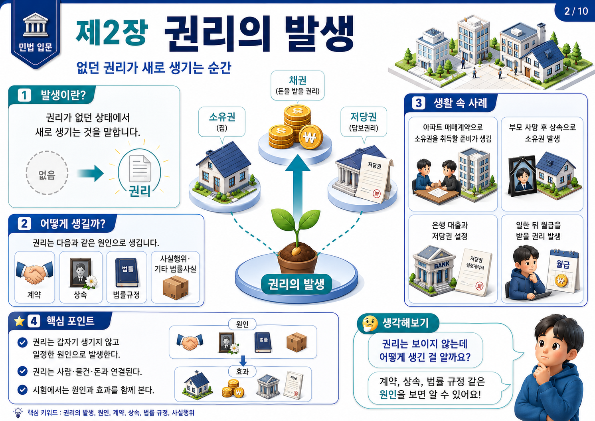
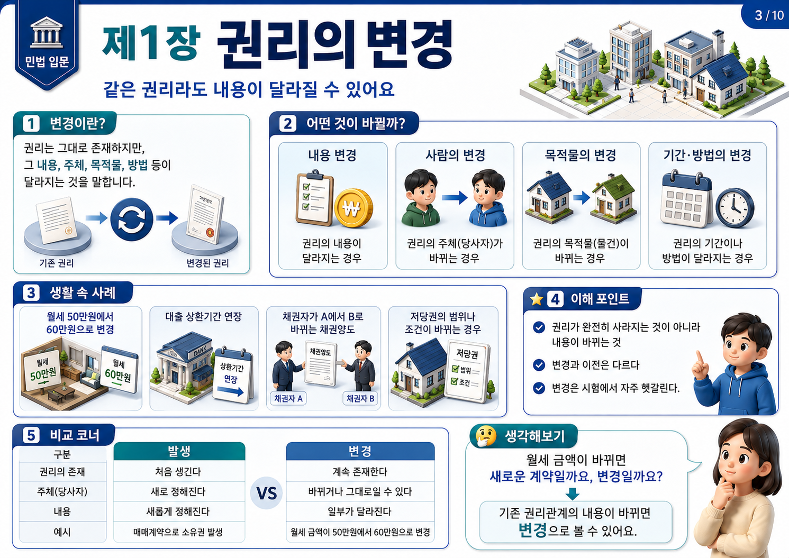
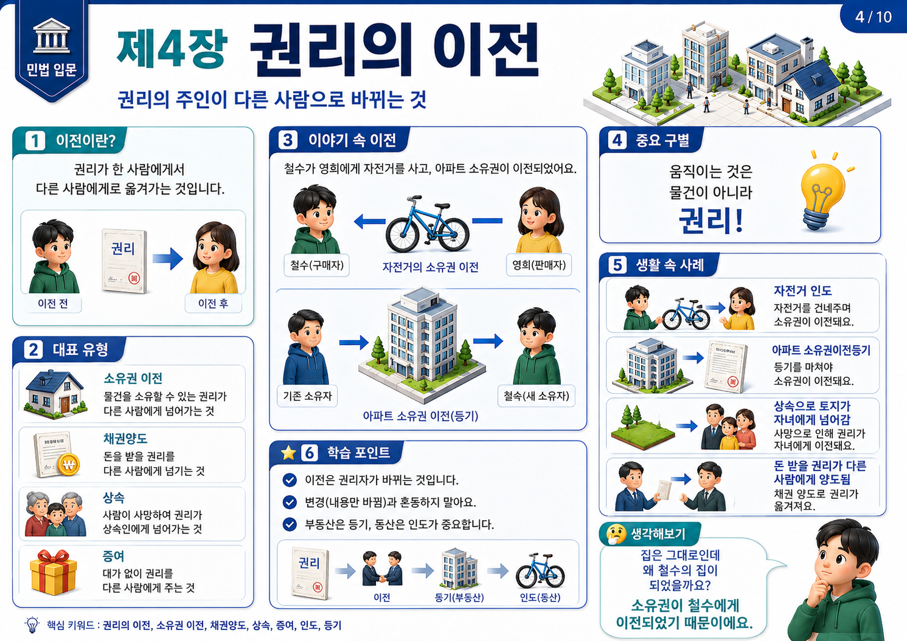
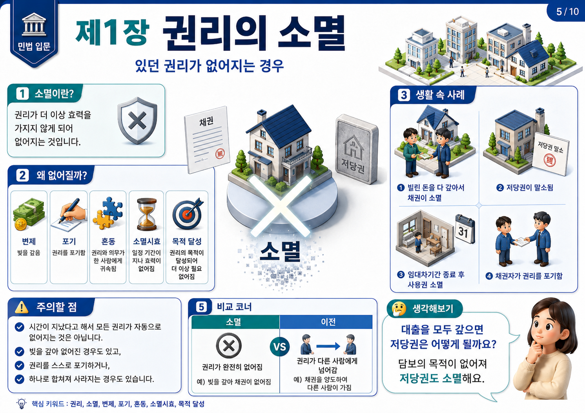
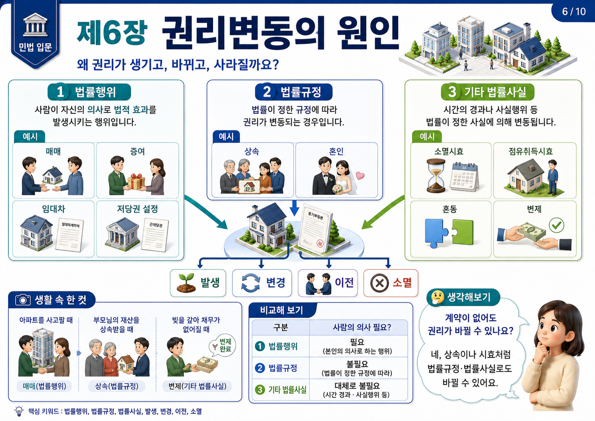
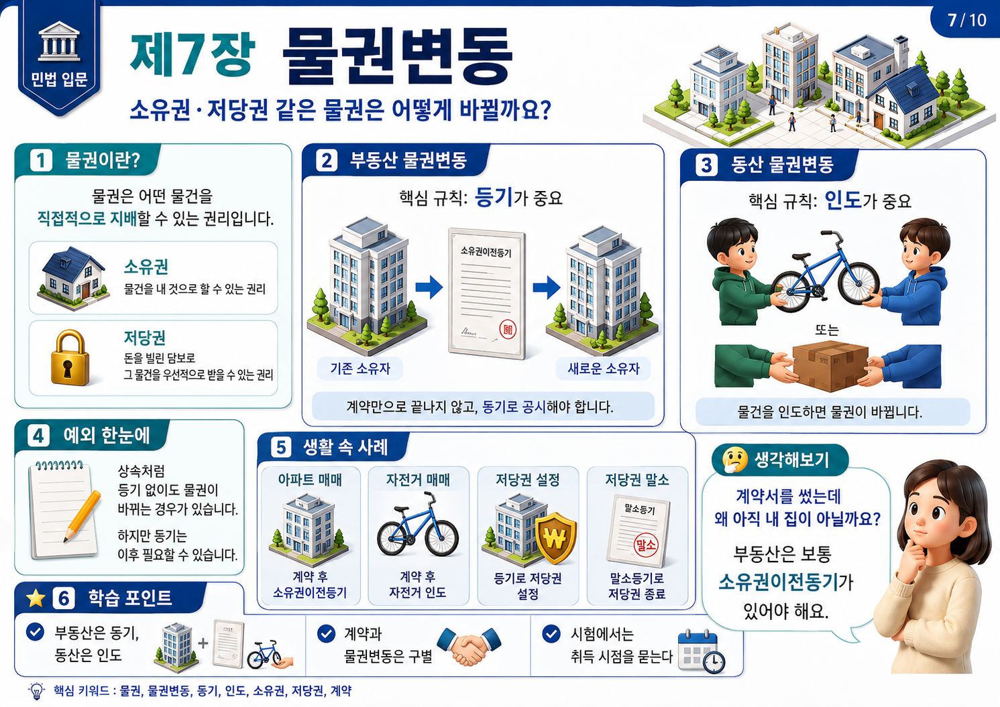
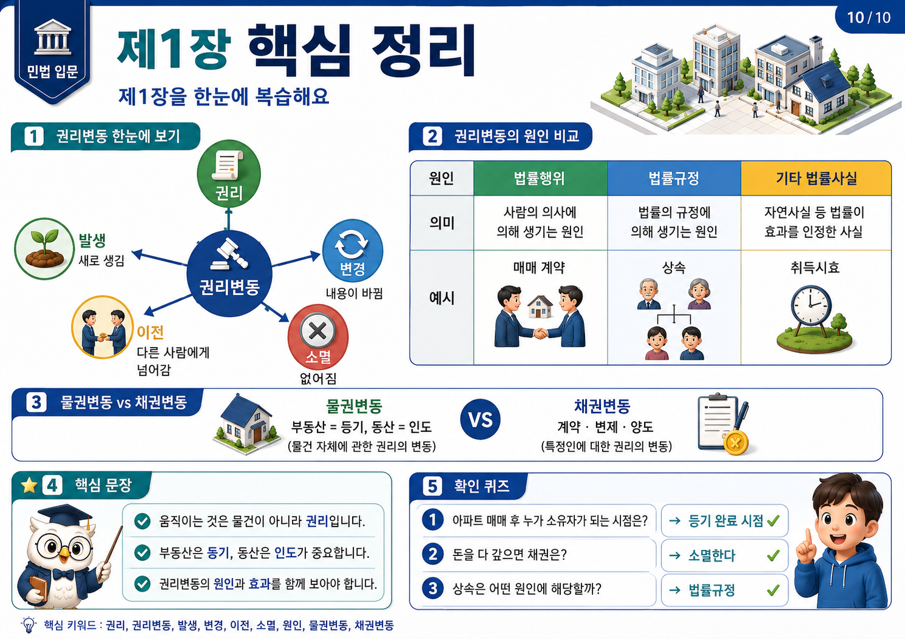

상위 단원
이 페이지는 민법의 기초 단원에 포함됩니다. 강의목차에서 같은 묶음의 앞뒤 주제를 함께 확인하세요.
제1절 요약
권리변동의 핵심은 물건이 움직이는 것이 아니라, 그 물건에 붙어 있는 법적인 힘이 움직인다는 점입니다. 집은 그대로 서 있어도 누가 소유자인지, 누가 사용ㆍ수익할 수 있는지, 누가 담보로 잡았는지가 바뀌면 법적으로는 큰 변화가 일어난 것입니다.
공부할 때는 세 가지를 먼저 잡습니다. 무엇이 바뀌었는가, 왜 바뀌었는가, 그 바뀐 사실을 누구에게까지 주장할 수 있는가입니다. 이 질문에 익숙해지면 매매, 증여, 상속, 압류, 수용, 시효취득 문제를 훨씬 쉽게 읽을 수 있습니다.
권리변동은 원인, 절차, 효과의 순서로 봅니다. 계약은 ‘넘겨주겠다’는 약속을 만들고, 등기는 ‘이제 진짜 바뀌었다’는 공시를 합니다. 다만 상속, 형성판결, 경매, 수용처럼 법이 특별히 정한 경우에는 등기 없이도 권리변동이 생길 수 있습니다.
움직이는 것은 건물이 아니라 소유권ㆍ전세권ㆍ저당권 같은 법적 힘입니다.
매매계약, 등기, 소유권 취득처럼 단계를 나누어 봅니다.
부동산 매매는 등기가 원칙이고, 상속ㆍ형성판결ㆍ경매 등은 예외와 연결됩니다.
제2절 권리란 무엇인가?
권리는 쉽게 말해 법이 ‘그래도 된다’고 인정해 준 힘입니다. 내가 가진 자전거를 탈 수 있는 힘, 내 돈을 돌려달라고 요구할 수 있는 힘, 내 땅 위를 남이 함부로 지나가지 못하게 막을 수 있는 힘이 모두 권리입니다.
민법 전체는 결국 권리가 어떻게 생기고, 어떻게 바뀌고, 어떻게 사라지는지를 다룹니다. 권리는 크게 물건을 직접 지배하는 권리와 상대방에게 무엇을 해 달라고 요구하는 권리로 나누어 볼 수 있습니다.
소유권, 지상권, 저당권 같은 물권은 물건을 직접 지배하는 권리이고, 대금지급청구권, 인도청구권, 손해배상청구권 같은 채권은 특정 사람에게 요구하는 권리입니다.

| 구분 | 쉬운 뜻 | 대표 예시 |
|---|---|---|
| 물권 | 물건을 직접 지배하는 권리 | 소유권, 지상권, 저당권 |
| 채권 | 특정 사람에게 요구하는 권리 | 대금지급청구권, 인도청구권 |
| 권리의 기능 | 사용ㆍ수익ㆍ처분 또는 청구의 근거 | 집에 살기, 돈 받기, 담보 실행 |
제3절 권리변동이란 무엇인가?
권리변동은 권리가 생기거나, 내용이 바뀌거나, 다른 사람에게 넘어가거나, 없어지는 것입니다. 중학생 눈높이로 바꾸면 법적인 주인이 바뀌는 일, 법적인 약속의 내용이 달라지는 일, 법적인 힘이 사라지는 일입니다.
가장 쉬운 비유는 학교 사물함 열쇠입니다. 사물함은 그대로 있지만 열쇠를 가진 사람이 바뀌면 실제 사용권도 바뀝니다. 열쇠를 빌려주면 사용권 일부가 이동하고, 학교가 사물함을 회수하면 기존 권리는 사라집니다.
권리변동을 볼 때는 네 질문을 던집니다. 무엇이 바뀌었는가, 무엇 때문에 바뀌었는가, 어떤 절차가 더 필요한가, 누구에게까지 주장할 수 있는가입니다. 이 네 질문은 권리변동 단원의 만능 열쇠입니다.
매매계약으로 대금지급청구권이 생기거나 저당권이 설정되는 경우입니다.
월세가 바뀌거나 채권자가 A에서 B로 바뀌는 경우입니다.
소유권 이전, 채권양도, 상속, 증여가 대표 사례입니다.
변제, 포기, 혼동, 소멸시효, 목적 달성으로 권리가 끝나는 경우입니다.

- 무엇이 바뀌었는가: 소유권, 채권, 담보권 중 무엇인지 확인합니다.
- 무엇 때문에 바뀌었는가: 계약, 상속, 판결, 시효, 수용 중 원인을 찾습니다.
- 어떤 절차가 필요한가: 등기, 인도, 통지, 승낙, 완납, 수용개시일을 확인합니다.
- 누구에게 주장할 수 있는가: 당사자 사이 효력인지, 제3자에게도 대항 가능한지 봅니다.
제4절 권리변동의 구조와 원인
권리변동은 원인 발생, 필요한 절차 진행, 권리변동 성립, 당사자 사이의 효력, 제3자에 대한 대항 가능성의 흐름으로 이해하면 편합니다.
토지 매매에서는 매매계약이 원인이고, 소유권이전등기가 필요한 절차이며, 등기 후에야 부동산 소유권이 실제로 변동합니다. 반대로 상속, 형성판결, 공경매 같은 경우는 법이 특별히 정해 등기 전에도 효력이 문제될 수 있습니다.
권리변동의 대표 원인은 법률행위, 법률의 규정, 판결ㆍ재판, 행정처분ㆍ공권력, 공시행위입니다. 원인을 정확히 찾으면 그 다음 필요한 절차와 효과도 자연스럽게 따라옵니다.



| 원인 | 쉬운 뜻 | 대표 사례 |
|---|---|---|
| 법률행위 | 사람이 의사로 만드는 법률효과 | 매매, 증여, 임대차, 저당권 설정 |
| 법률의 규정 | 법이 직접 권리변동을 일으킴 | 상속, 시효취득, 부합, 혼동 |
| 재판ㆍ판결 | 법원의 판단으로 변동시킴 | 형성판결, 공유물분할판결 |
| 행정처분ㆍ공권력 | 국가가 공법적으로 변동시킴 | 압류, 수용, 공매, 경매 |
| 공시행위 | 바뀐 권리를 겉으로 드러냄 | 등기, 인도, 통지 |
제5절 권리변동 원인별 이해
법률행위에 의한 권리변동은 사람이 어떤 법적 결과를 의도하고 한 행위에서 출발합니다. 매매계약, 증여계약, 임대차계약, 저당권 설정계약이 대표 예입니다. 다만 부동산에서는 계약만으로 끝나지 않고 등기라는 공시 절차가 중요한 역할을 합니다.
단독행위에 의한 권리변동도 있습니다. 유언, 상속포기, 추인, 취소처럼 한 사람의 의사표시만으로 법률효과가 문제되는 경우입니다. 계약만 법적 행위라고 생각하면 이 부분에서 자주 틀립니다.
법률의 규정 자체에 의한 권리변동은 사람의 합의가 없어도 법이 직접 효과를 일으키는 경우입니다. 상속이 대표 예입니다. 점유취득시효도 일정한 점유 상태를 법이 보호해 권리취득의 길을 열어 주는 제도입니다.
판결ㆍ재판에 의한 권리변동에서는 형성판결과 확인판결을 구별해야 합니다. 형성판결은 판결 자체가 법률관계를 바꾸지만, 확인판결은 이미 있는 관계를 확인하는 성격이 강합니다.
행정처분ㆍ공권력에 의한 권리변동은 압류, 경매, 공매, 수용처럼 국가 작용으로 권리관계가 바뀌는 경우입니다. 특히 수용은 공익사업을 위해 사업시행자가 수용개시일에 소유권을 취득하는 구조와 연결됩니다.
매매, 증여, 임대차, 저당권 설정처럼 의사표시가 중심입니다.
상속, 혼인, 시효처럼 법이 정한 요건에 따라 효과가 생깁니다.
소멸시효, 점유취득시효, 변제, 혼동처럼 사실과 시간이 중요합니다.

제6절 등기ㆍ공시가 왜 중요한가?
권리변동은 머릿속이나 당사자 사이의 약속만으로 끝나면 곤란합니다. 제3자도 누가 권리자인지 알아야 하기 때문입니다. 그래서 민법은 권리의 변화가 밖으로 드러나도록 공시 방법을 둡니다.
부동산은 등기, 동산은 인도, 채권양도는 통지 또는 승낙이 대표적인 공시 방법입니다. 공시는 겉으로 보이지 않는 권리의 변화를 사회가 신뢰할 수 있게 만드는 장치입니다.
A가 토지를 B에게 팔았지만 등기를 하지 않았다면, 제3자는 등기부를 보고 아직 A의 땅이라고 믿을 수밖에 없습니다. 그래서 법은 계약과 등기를 구별하고, 부동산 물권변동에서는 등기를 매우 중요하게 봅니다.
| 대상 | 공시 방법 | 핵심 의미 |
|---|---|---|
| 부동산 | 등기 | 권리변동을 등기부에 드러냄 |
| 동산 | 인도 | 물건 점유의 이전으로 드러냄 |
| 채권양도 | 통지 또는 승낙 | 채무자와 제3자에게 권리 이전을 알림 |
| 특허ㆍ지분 등 | 등록ㆍ기재 | 특별법이 정한 방식으로 표시 |
- 계약은 안쪽의 약속입니다.
- 공시는 바깥쪽의 표지판입니다.
- 권리 자체가 생겼는가와 그 권리를 남에게도 주장할 수 있는가는 구별해야 합니다.
제7절 권리변동의 효과
권리변동의 효과는 대인적 효력과 물권적 효력으로 나누어 보면 이해가 쉽습니다. 대인적 효력은 당사자 사이에서만 작동하는 효력입니다. 매매계약을 하면 매도인은 소유권을 이전해 줄 의무를, 매수인은 대금을 지급할 의무를 부담합니다.
물권적 효력은 누구에게나 주장할 수 있는 효력입니다. 내가 소유자라면 다른 사람 누구에게도 이 물건은 내 것이니 침해하지 말라고 말할 수 있습니다. 그래서 물권변동은 공시가 중요합니다.
대항력은 제3자에게도 내 권리를 주장할 수 있는 힘입니다. 공시효는 등기나 인도처럼 외부에 드러낸 행위가 권리변동의 효력을 뒷받침하는 기능입니다.
당사자 사이 약속이 있어도 제3자에게 주장하려면 공시나 대항요건이 필요할 수 있습니다.
계약은 안쪽 약속, 등기ㆍ인도ㆍ통지는 바깥 표지판입니다.
| 구분 | 의미 | 예시 |
|---|---|---|
| 대인적 효력 | 당사자 사이에서만 작동 | 매도인의 이전등기의무, 매수인의 대금지급의무 |
| 물권적 효력 | 누구에게나 주장 가능 | 소유권자가 침해자에게 반환청구 |
| 대항력 | 제3자에게 주장 가능 | 등기된 소유권, 대항요건 갖춘 임차권 |
| 공시효 | 외부 표시가 신뢰를 형성 | 등기, 인도, 통지 |
제8절 쉬운 사례와 단계별 도식
사례를 볼 때는 먼저 어떤 권리인지, 어떻게 바뀌었는지, 원인은 무엇인지, 부동산이면 등기가 필요한지 차례대로 확인합니다.
매매 사례에서는 계약으로 채권관계가 생기고, 등기까지 마쳐야 부동산 소유권 변동이 완성됩니다. 상속 사례에서는 사망으로 상속이 개시되어 등기 전에도 권리승계가 문제됩니다.
경매에서는 매각대금 완납 시점, 수용에서는 수용개시일, 시효취득에서는 일정 기간의 점유와 등기 절차가 핵심 기준이 됩니다.
| 사례 | 원인 | 핵심 판단 |
|---|---|---|
| 아파트 매매 | 매매계약 | 소유권이전등기 필요 |
| 자전거 매매 | 매매계약과 인도 | 동산은 인도가 중요 |
| 상속 | 사망과 법률규정 | 등기 전에도 권리승계 문제 |
| 증여 | 증여계약 | 부동산이면 등기 필요 |
| 저당권 설정 | 담보계약 | 저당권설정등기 필요 |
| 대출 상환 | 변제 | 채권 소멸과 저당권 말소 |
| 시효취득 | 장기간 점유 | 시효완성 후 등기까지 검토 |
제9절 대표 판례 읽기
형성판결과 확인판결은 다르게 취급됩니다. 형성판결은 판결 그 자체가 새로운 법률관계를 만들지만, 확인판결은 이미 존재하는 관계를 확인하는 성격이 강합니다. 그래서 형성판결은 등기 없이도 물권변동이 문제될 수 있고, 확인판결은 등기 필요 여부를 따로 봅니다.
가등기는 본등기를 위한 순위보전 장치입니다. 가등기에 기한 본등기를 하더라도 물권변동의 효력이 가등기 시로 소급하지 않는다는 점은 순위보전과 실제 권리변동을 구별하게 해 줍니다.
부동산 점유취득시효는 시효완성만으로 끝나지 않습니다. 취득시효 완성으로 소유권이전등기청구권이 문제되고, 최종적으로는 등기를 해야 소유권 취득이 완성됩니다.
상속과 경매는 법률 또는 공권력에 의해 권리변동이 생기는 경우입니다. 상속은 등기 없이도 효력이 생기고, 경매는 매각대금 완납 시점을 중심으로 권리취득이 문제됩니다.
확정되면 법률관계가 새로 형성됩니다.
실제 물권변동 효력이 가등기 시로 소급하는 것은 아닙니다.
오래 점유했다고 곧바로 소유권자가 되는 것은 아닙니다.
제10절 학습활동과 연습문제
수업 중에는 권리변동을 보이지 않는 화살표로 설명하면 좋습니다. 집 그림 하나를 두고 소유권, 전세권, 저당권, 점유라는 화살표를 그린 뒤 어떤 화살표가 생겼는지, 바뀌었는지, 이동했는지, 사라졌는지 묻게 합니다.
문제를 풀 때는 계약과 등기를 반드시 분리해서 말하는 연습이 필요합니다. ‘샀다’는 계약의 언어이고, ‘내 것이 되었다’는 물권변동의 언어입니다.
| 문제 | 정답 방향 |
|---|---|
| 권리변동의 네 가지 형태는? | 발생, 변경, 이전, 소멸 |
| 부동산 매매에서 소유권이 원칙적으로 이전되는 시점은? | 소유권이전등기를 마친 때 |
| 형성판결과 확인판결 중 판결 자체가 법률관계를 바꾸는 것은? | 형성판결 |
| 가등기의 핵심 효력은? | 본등기 순위보전 |
| 부동산 점유취득시효 완성 후 최종 취득을 위해 필요한 절차는? | 소유권이전등기 |
- 집을 샀는데 왜 아직 내 집이 아닐 수 있을까?
- 계약과 등기는 왜 구별할까?
- 상속은 왜 계약이 없어도 권리가 움직일까?
- 가등기는 왜 줄 서기이지 입장 완료가 아닐까?
- 수용은 왜 원시취득이라고 부를까?
제11절 핵심정리와 시각자료 설계안
권리변동은 권리의 발생ㆍ변경ㆍ이전ㆍ소멸입니다. 부동산 매매는 원칙적으로 등기가 있어야 물권변동이 완성되고, 상속ㆍ형성판결ㆍ경매ㆍ수용 등은 법이 특별히 정한 예외로 정리합니다.
가등기는 순위보전이지 물권변동이 가등기 시로 소급하는 것은 아닙니다. 부동산 점유취득시효는 시간만 볼 것이 아니라 등기 절차까지 함께 확인해야 합니다.
시각자료는 권리가 움직이는 집, 계약과 등기의 이중 레일, 예외의 지도, 사례 미션 보드처럼 구성하면 좋습니다. 핵심은 학생이 스스로 ‘지금 바뀐 것은 물건인가, 권리인가?’를 묻게 만드는 것입니다.
집은 그대로 두고 권리 화살표만 움직이게 표현합니다.
계약 체결과 등기 완료가 다른 단계임을 보여 줍니다.
원칙은 등기, 예외는 법률의 특별규정으로 정리합니다.
매매, 증여, 상속, 경매, 수용, 취득시효를 직접 판정하게 합니다.

| 구분 | 핵심 원인 | 효과 포인트 |
|---|---|---|
| 계약형 | 매매, 증여 | 당사자 합의만으로는 부족할 수 있음 |
| 법률형 | 상속, 시효취득 | 법이 직접 권리이동을 인정 |
| 판결형 | 형성판결 | 판결 자체가 관계를 바꾸는지 확인 |
| 공권력형 | 경매, 압류, 수용 | 완납ㆍ개시일ㆍ집행절차 확인 |
| 공시형 | 등기, 인도, 통지 | 제3자에 대한 대항력과 신뢰 확보 |
상세 강의 해설
제1장 권리변동이란 무엇인가에서는 생활 속 질문을 먼저 놓고, 그 질문이 민법의 어떤 개념과 연결되는지 차례로 설명합니다. 사례를 먼저 읽은 뒤 권리의 주체, 객체, 원인, 절차, 효과를 표시해 보세요.
이 장의 핵심은 어려운 용어를 곧바로 외우는 것이 아니라, 사례 안에서 법률효과가 왜 생기는지 설명할 수 있게 되는 것입니다. 그림과 표는 그 흐름을 한 번에 떠올리기 위한 장치로 활용하면 좋습니다.
기출형 선택지에서는 권리변동은 발생ㆍ변경ㆍ소멸입니다. / 계약은 안쪽의 약속, 등기는 바깥쪽의 표지판입니다.처럼 주체, 요건, 효과 중 하나만 바꾸는 방식이 자주 쓰입니다. 따라서 정답을 고른 뒤에도 틀린 선택지가 왜 틀렸는지 한 줄로 적어 두는 것이 좋습니다.
마지막 확인문제는 많은 양을 풀기보다 개념을 구분하는 데 초점을 두었습니다. 정답 방향을 본 뒤에도 왜 그 답이 되는지 자기 말로 다시 말해 보면 실전 사례형 문제에 더 강해집니다.
핵심 개념
- 권리변동은 권리의 발생ㆍ변경ㆍ소멸입니다.
- 물건은 그대로 있어도 법적 귀속과 공시가 바뀌면 권리변동이 일어납니다.
- 권리변동은 원인, 절차, 효과 순서로 읽습니다.
- 계약과 등기는 서로 다른 단계입니다.
- 상속, 형성판결, 경매, 수용은 등기 없는 권리변동 예외와 연결됩니다.
시험 포인트
- 권리변동은 발생ㆍ변경ㆍ소멸입니다.
- 계약은 안쪽의 약속, 등기는 바깥쪽의 표지판입니다.
- 부동산 매매ㆍ증여는 원칙적으로 등기를 확인합니다.
- 상속ㆍ형성판결ㆍ경매ㆍ수용은 등기 없는 권리변동 예외로 정리합니다.
- 가등기는 순위보전이지 물권변동 시점의 소급이 아닙니다.
복습 질문
- 제1장 권리변동이란 무엇인가에서 가장 먼저 확인해야 할 기준은 무엇인가요?
- 이 단원이 민법강의의 다른 단원과 연결되는 지점은 어디인가요?
- 기출 선택지에서 주체, 요건, 효과 중 무엇을 바꾸면 오답이 되나요?
연결 학습
이 단원을 읽은 뒤에는 문제풀이 페이지에서 같은 과목을 선택해 5문항 이상 풀어 보세요. 정답보다 중요한 것은 선택지마다 근거를 붙이는 연습입니다.